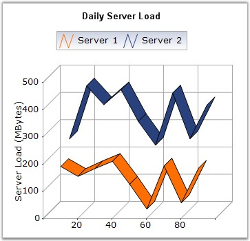

Line Charts join points on a plot using straight lines showing trends in data at equal intervals. Line charts treats the input as non-numeric, categorical information, equally spaced along the x-axis. This is appropriate for categorical data, such as text labels, but can produce unexpected results when the X values consist of numbers.
When rendered in 3D, the plot looks like a ribbon and hence such types are also referred to as Ribbon or Strip Charts.
The appearance of the lines and the points can be configured with options such as the colors used, thickness of the lines and the symbols displayed.

Figure 42: Chart displaying Line Series in 3D Mode
Chart Details
|
Details | |
|
Number of Y values per point |
1. |
|
Number of Series |
One or More. |
|
Cannot be Combined with |
Pie, Bar, Stacked Bar, Polar, Radar. |
Line series can be added to the chart using the following code.
|
[C#]
// Create chart series and add data points into it. ChartSeries series = this.chartControl1.Model.NewSeries("Series Name",ChartSeriesType.Line); series.Points.Add(1, new double[] { 20, 8, 8 }); series.Points.Add(2, new double[] { 70, 5, 5 }); series.Points.Add(3, new double[] { 10, 8, 8 }); series.Points.Add(4, new double[] { 40, 10, 10 });
// Add the series to the chart series collection. this.chartControl1.Series.Add(series); |
|
[VB.NET]
' Create chart series and add data points into it. Dim series As ChartSeries = Me.chartControl1.Model.NewSeries("Series Name",ChartSeriesType.Line) series.Points.Add(1, new double[] { 20, 8, 8 }) series.Points.Add(2, new double[] { 70, 5, 5 }) series.Points.Add(3, new double[] { 10, 8, 8 }) series.Points.Add(4, new double[] { 40, 10, 10 })
' Add the series to the chart series collection. Me.chartControl1.Series.Add(series) |